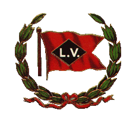

|

Desmond Street Park. Sayre, Pennsylvania. 
Sayre
Pennsylvania
is
a
daughter
of
the
Iron
Horse..She
was
born
in
the
1870's
when
the
Lehigh
Valley
Railroad
arrived
from
the
south,
to interchange coal with the Erie railroad in
nearby
Waverly, NY. Sayre was a major junction point of
three different
railroads (that would all eventually become part
of the LV system) and
being such a strategic location, it was perfect
for a major yard, shops
and maintenance terminal for the new railroad.
Sayre became the "heart"
of the Lehigh Valley Railroad, and the town grew
quickly along with
the railroad, through the later decades of the
19th
Century.
Downtown Sayre's "main street" is Desmond street, named after Thomas Desmond, who was the assistant superintendent of the Lehigh Valley Railroad at the time that the railroad was building into Sayre. Thomas Desmond passed away in 1873, right at the moment that Sayre's first streets were being planned and laid out. Sayre itself is named after Robert H. Sayre, who was the vice president and chief engineer of the railroad. By 1880, what we know today as downtown Sayre was well underway. The current Sayre passenger station was completed in 1881, and the Desmond street business district buildings were being built by that time as well. By 1900 Sayre was a thriving town. Part of the original downtown Sayre included a beautiful small town park, known as "Desmond Street Park", this park existed for about 80 years (about 1880 to 1959), it occupied the space between the railroad station and the downtown business district, tying the important passenger station and the rest of downtown together into one pleasing scene. This was a much loved park, and many Valley residents still remember it fondly from their youth, waiting for family members arriving by train, waiting for Dad to get out of work at the Sayre shops, and simply enjoying the park as downtown bustled around them. But times changed..by the late 1950's passenger service on the LV was ending, and some felt the park could be better used to increase commerce in town..at the time, this was considered "progress" and many probably just accepted it, (although it is also known that many were dismayed at the loss of the park!) A large new business opened in downtown Sayre in 1960, the J.J. Newberry company, who owned a chain of department stores around the USA. The Newberry's building took over the entire space once occupied by Desmond Street Park. Newberry's in Sayre thrived through the 1960's, 70's and 80's, but by the 1990's business slowed and eventually the store (and the entire Newberry's chain) closed down. A dollar store then opened in the building, but that also eventually closed. By 2012 (and the writing of this webpage) the store is now empty, abandoned and becoming quite derelict. Times change, again..The Valley once had three thriving downtown business districts; Waverly, Sayre and Athens. The community at large has evolved and changed over the years, and Elmira street has become the new "main" shopping district for the Valley as a whole, and the downtown shopping districts have struggled to survive. They still have businesses! most of them quite sucessful..but not as many businesses as there once was, and it's unlikely the downtown shopping districts will ever regain their past capacity, since Elmira street has taken over the main shopping role for the Valley. Which means that today, a large commercial store space in downtown Sayre is simply not needed, the old Newberry's building is now simply a relic of the mid-20th century way of life, no longer needed or wanted. Many people have begun wondering about, and discussing that lost downtown Sayre park. Some early discussion about the possibility of "restoring the park" first hit the internet about 2005. For several years it was just a wistfull thought, but in 2012 two things changed that *really* got a head of steam going under this idea! The building became empty, and a facebook group really got the idea of the park going! with a huge amount of community support this time! The facebook group is: "Growing up in the Valley Memory Lane" If you are from the Valley, and enjoy reading about or discussing "the old days" then you should definately join this group! What a great idea it would be to *restore* Desmond Street Park! The Newberry's store is not needed, and the businesses that do remain in downtown Sayre could really benefit from the beautification of Sayre this park could bring! The park would mean a much more attractive downtown, which would draw more people, which could only be good for business! If some considered the removal of the park in the first place a "mistake"..the time has come to fix that mistake! This webpage is being built and maintained to go along with the "Growing up in the Valley Memory Lane" Facebook group. The facebook group already contains most of the photos on this page, but I thought a place where *all* the photos and ideas could be seen together, all in one place, would be beneficial and interesting, to help support the project. If anyone has anything they would like to add, more photos, suggestions, anything at all! please email me (link at the bottom of the page) On to the photos! below are all the known (so far) photos of the original Desmond Street Park..most of these photos are believed to be public domain. I will give the photographer name, if known. (most are so old the photographer's name has been lost to history)
Now
lets
walk
down
off
the
Packer
avenue bridge and take a walk around the park.. View
of
Desmond
Street
park. from the south, looking North. the Lehigh
Valley passenger station is on the right, Desmond
street park and the
downtown business district on the left. A 1918
postcard from a photo
taken about 1917:
A postcard
made from
the previous photo:
Another View
of the
Lehigh
Valley passenger station from the edge of the
park, looking East. Early
20th century, photographer unknown:
Up on the
walkbridge!
looking out toward the station and the park. View
is looking west,
1930's. photographer unknown. The big 2-10-2
locomotive, without its
tender, is probably being prepared for conversion
into a 2-8-2 at the
Sayre shops. The park is visable
between the station and the downtown business
district: And lastly, a
view
of
the park near the end of its days, also taken from
the famous
walkbridge. exact date of this photo is unknown,
but it's sometime in
the 1950's.
Photo by
Lloyd
Hall:
A
last
look at the
Park, from the Evening Times, October 19, 1959,
looking North, with the
approach to the Packer ave bridge in the
foreground:
Thanks!
to
Dawn
Fenton for finding those two newspaper articles,
and posting them on
the "Growing
up in
the Valley Memory Lane" facebook
group. The
Newberrys
store
opened in the summer of 1960. Here is an early
photo showing the
Newberry's building, taken about
1963:
Phase
3
of
the
Park
site?
And the
classic
Lehigh Valley Railroad
Passenger station,
also beautifully restored recently, by the Sayre
Historical Society! Imagine
these
two
stately
Victorian
structures,
once
again
facing
each
other
across
the
paths, grass and trees of a beautiful
park, as they once did, instead of being blocked
from each other by an
ugly monolith of an abandoned building and an
empty parking lot:
Here are a few
"artist renderings" of
a new park on the
site, this first one is a bit stylized, but it was
made quickly to show
the members of a LVRR discussion forum what site
was being
discussed..Aerial
photo from 1971:
Notice the
locomotive on display in
the park! That has also been a popular idea for
the past several years. Let's say this
park
does get
built..what will it contain? obviously paths,
grass, trees,
benches..perhaps a gazebo..what else? Well, since
we know Sayre owes
its very existance to the Lehigh Valley
Railroad, how a about an actual LV locomotive on
display in the park?! There is a
genuine
LV
caboose (built in
Sayre!) on display next to the Sayre Historical
Society museum at the
Sayre train station, and in recent years there was
an idea in the works
to also get a LV locomotive to display there as
well! Unfortunately
that particular project fell-through, due to
circumstances beyond the
control of the Historical Society, so for now
there are no specific
plans for a locomotive display in Sayre..but it
could still happen! Back in the
late
1940's
the LV offered, for
free, one its recently retired steam locomotives
to display in Desmond
Street park, one of the large "Wyoming" type 4-8-4
locomotives, the
newest, last, and most modern of all LV steam
locomotives:
For reasons
unknown,
Sayre turned the railroad
down! and the
locomotive went to scrap with the rest of them..If
the big Wyoming had
been preserved in the park, today it would be the
only surviving LV
Steam locomotive, but sadly it was not to be.. But now, 60
years
later,
this kind of
preservation could still
happen! It would have to be a LV diesel locomotive
this time, since no
LV steam locomotives survive, but thats ok..A
diesel is still a fine
specimen for a town park! many locomotives are
lovingly displayed in
town and city parks all over the USA, and indeed
the world! just a
couple of examples:
What better
way to
honor
Sayre's history than
a genuine LV locomotive! Several
classes of
LV
locomotives still exist
today, and many are still operating with
railroads! forty, fifty, even
sixty years after they were built..But! they can't
operate
forever..eventually, probably soon in the coming
years, most of them
will be retired..and many will still be scrapped!
The time is perfect
to try to get such a locomotive to Sayre! Several
types of LV diesels
still survive, such as the GP38-2's: The Alco
C420's:
And
others..Norfolk
Southern, the railroad
that runs through Sayre today, is still operating
all four of the LV
GP38AC locomotives! These locomotive can, and do,
visit
Sayre on occasion..(Wearing NS black paint of
course) but still, they
are LV survivors!
even if their red has been painted over. For the
full list of surviving
LV locomotives, see the LV
Surviving
Locomotives
webpage. And that is
everything
for now..but this page
will be updated! new info added as things
(hopefully) progress, and if
anyone has
anything they would like to share on this page,
photos, more info,
anything! please send me an email! (link below)
and don't forget to
keep up with the discussions about the park on the
facebook page. Can this park
get
built? of course it
can! I will update
this
page
as things progress. Thanks!
The
Black
Diamond
Express
-
1896 Lehigh
Valley
Railroad Surviving Locomotives Various
"tours"
around
local
railroad
sites. And
other useful links, for the "Restore Desmond
Street Park" movement! Sayre
"Morning Times" newspaper "Growing
up in
the Valley Memory Lane" Borough of Sayre,
Pennsylvania,
official page.
This
webpage was created by and is maintained
by
Scot
Lawrence, This page first uploaded August 25, 2012 Updated with new photos, April 2015. Return to Scot's main page: https://sites.google.com/site/scotlawrence/
|
||
 |
 |